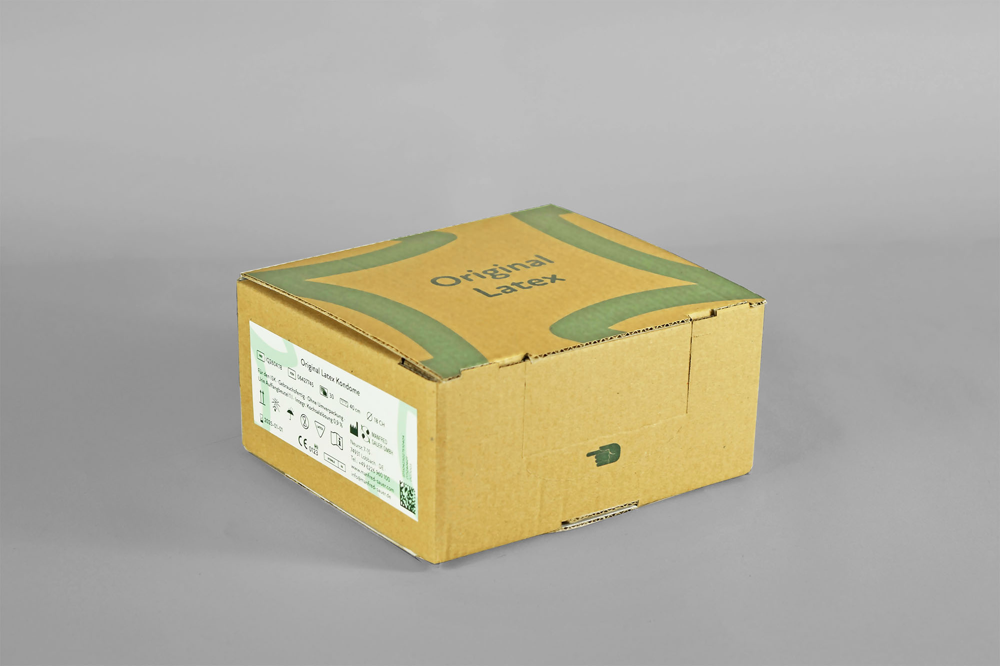
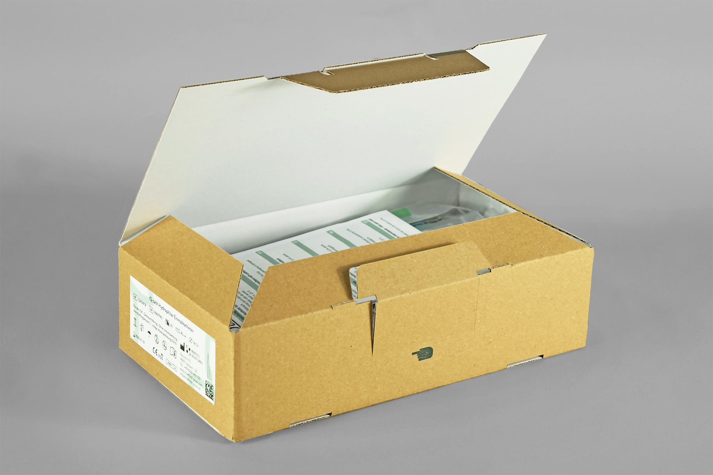
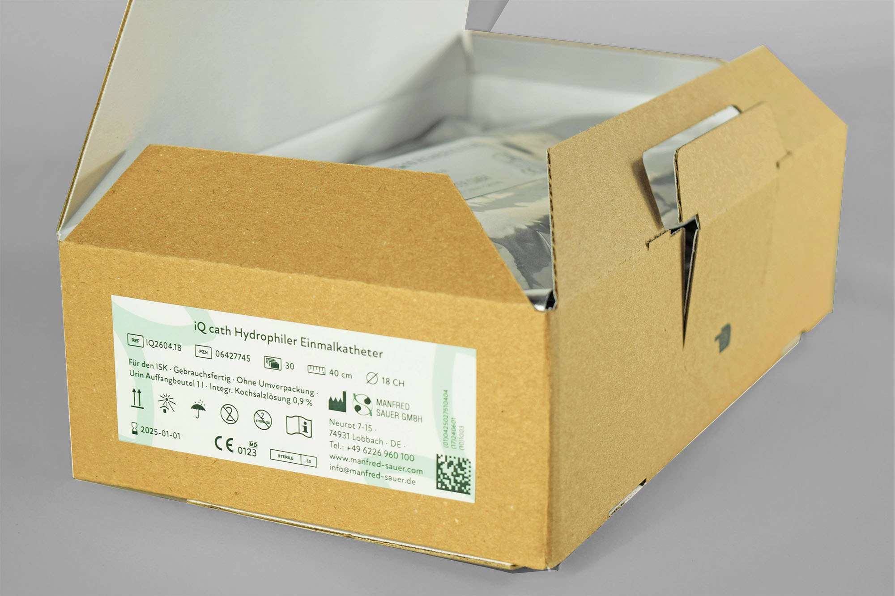
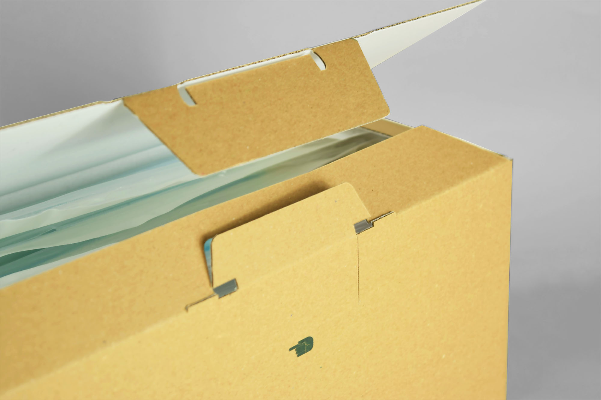

- Der Auftrag bestand in dem vollständigen Redesign und die Modularisierung der Katheterverpackungen des Medizinprodukteherstellers Manfred Sauer GmbH.
- Fachgebiet: Logodesign, Verpackungsentwicklung und -design
- Kunde: Manfred Sauer GmbH
- Entstehung: Studentische Gruppenarbeit
- Datum: Februar 2021
- Ein Automatikboden gewährleistet den gewohnten Abpackprozess, ein Originalitätsverschluss mit einrastenden Laschen den Erstöffnungsschutz und 5 teils modulare Verpackungsformate eine optimale Palettenauslastung. Die visuelle Wiedergabe des flexiblen Kugelkopfes im Logo greift das Markenkennzeichen von IQ-Cath auf und die abstrahierte Darstellung pflanzlicher Blätter erzeugt einen nachhaltigen Eindruck.




